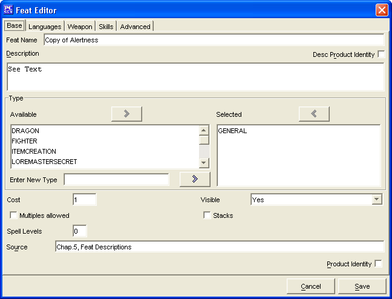

The Base Tab has everything required to make a simple Feat. The remaining tabs are for more advanced Feat creation. The Feats created will be saved into the data/custom directory under the name of customFeats.lst.
The Feat Name is where you will enter the name for your Feat.
The Desc Product Identity is used to show that the Description field is closed content. Permission must be gained from the publisher to release it into official files.
The Description is the short description of the feat from the source material. If that one line is not OGC, then the Desc Product Identity should be selected.
The two Type windows, Available and Selected are used to create a list of languages which the Feat grants.
The Cost is how many feat points the feat costs. A decimal value such as 0.5 would mean that it only costs 1/2 a feat point.
The Visible is where you will indicate whether and how you want the feat name to appear and print. The options are outlined below:
The Multiples Allowed is used to determine if a feat can be taken multiple times.
The Stacks is used to determine if the feat benefits may be stacked on one another.
The Spell Level is where you will enter the additional levels added to spells that use the Feat. Eg Empower Spell uses a spell slot two levels higher so 2 is entered in this field.
The Source field is a text window for listing what source material the Feat is from. If it is a custom created Feat, then you can leave this blank or simply put in "custom"
The Product Identity checkbox is to denote if the Feat's name being created is the Product Identity of a publisher
The Cancel and Save buttons, which appear on every tab, are used to either cancel the Feat creation or save it to the customFeats.lst file.